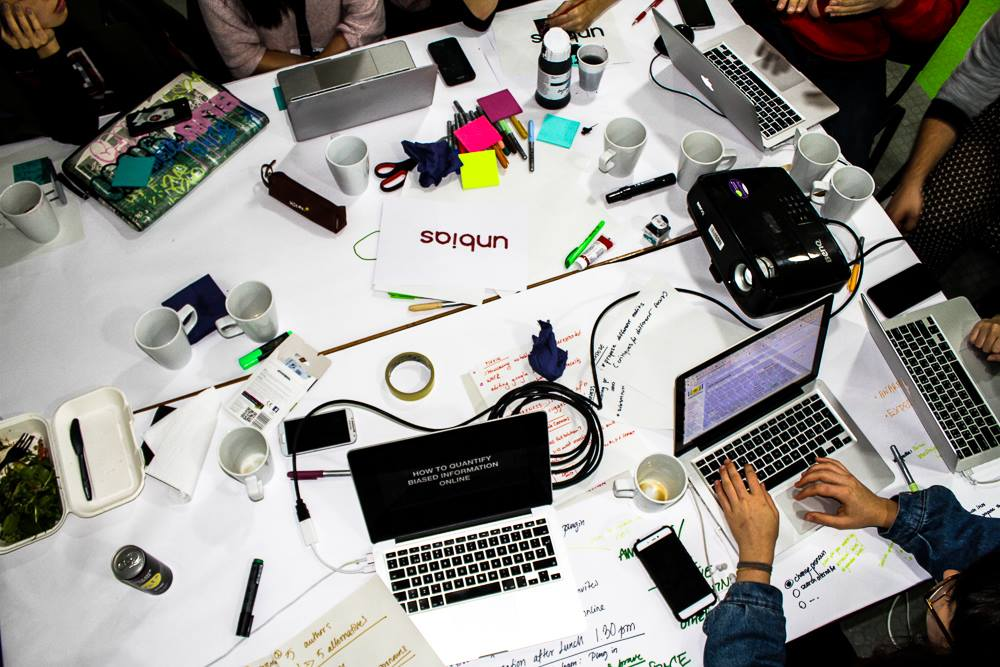

Resources
Some useful links for the Hackathon
For programmers
For designers
Intersectionality
Kimberlé Crenshaw
LGBTQIA+
Disability
WikiProjects exemplifying data and initiatives we’re aiming to work with/relate to:
Current related events: Lola Olufemi
- About her
- In the Guardian
- In gal dem